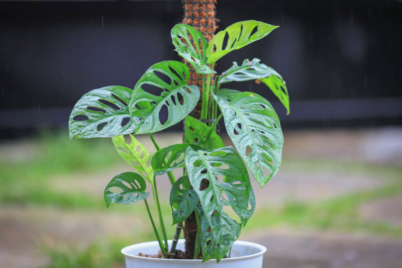

Monstera adansonii, the Adanson's monstera, Swiss cheese plant, five holes plant or Monkey mask plant is a species of flowering plant from family Araceae,
which is widespread across much of South America and Central America.